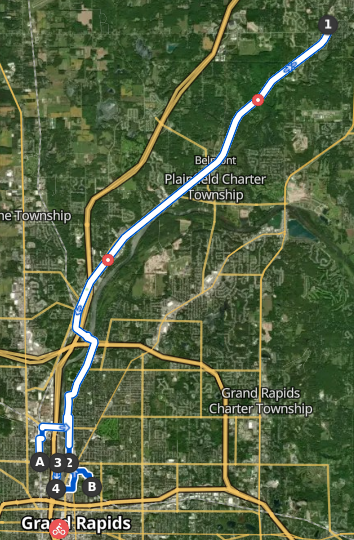

<link href="./css/style.css" rel="stylesheet" />

<header>
	<h1 id="meatless-trainer">MEATLESS<br />TRAINER</h1>
	<nav>
		<ul>
			<li><a href="#">posts</a></li>
			<li><a href="#">about</a></li>
		</ul>
	</nav>
</header>
<article>
	<p><em>Servus!</em></p>
<p>I'm a cyclist and runner finally submitting to my longtime aspiration
of becoming a triathlete. I'm an ethical vegan. I'm a fan of the Seattle
Mariners who doesn't know nearly enough about sabermetrics. I'm a word
nerd and cruciverbalist who went to summer camp and sat in the corner
studying <abbr>OLL</abbr> algorithms and Scrabble words while all the other kids played. The name of
this blog combines all these interests.</p>
<p>I also happen to be a fountain of blood in the shape of a girl, but
that's quite beside the point.</p>
<p>This site is presently built with Jekyll. I intend to replace it with
a custom <abbr>SSG</abbr> written in Rust that meets my exacting standards for
typography and design.</p>
<p>Part of the <a href="https://xsquares.club">IntersectingSquares</a>
webring. (Which I haven't actually registered the domain for, please
hold.)</p>
</article>
<article>
	<header>
		<h2 id="sub30">⏱ 29:58</h2>
		<span>Published 22 November 2023 in Grand Rapids, Michigan</span>
		<span>Last updated 22 November 2023</span>
	</header>
	<main>
		<p>Today I woke up from a rather pleasant midday nap to find out that the Mariners
			<a href="https://www.mlb.com/news/eugenio-suarez-d-backs-trade">traded Geno Su&aacute;rez</a> for a bag of chips and a half-eaten ham sandwich.</p>
		<p>This incensed me so thoroughly that I went out and ran a 3.5-minute <abbr>PB</abbr> <abbr>5K.</abbr>
			It was also a big fat milestone --- my first sub-30 since I started HRT, years and years
			ago. (And to point out how big of a difference it makes, my <em>slowest</em>
			testosterone-aided <abbr>5K</abbr> was 28:45.)</p>
	</main>
</article>
<article>
	<header>
<h2 id="first">🌆 First</h2>
<span>Published 06 November 2023 in Grand Rapids, Michigan</span>
<span>Last updated 06 November 2023</span>
	</header>
	<main>
<p>This blog was born from conjunction, as are so many
things. <em>Axaxaxas mlö.</em></p>
<p>The anagram that forms the name of this blog was lifted from <a
href="https://old.reddit.com/r/baseball/comments/17nrskz/lamb_nags_ram_mlb_anagrams_of_all_30_teams_i_put/">a
Reddit post</a> I stumbled across the other day. I also spotted <a
href="https://arne.me/articles/write-your-own-ssg">a post telling me to
write my own static site generator</a> on lobste.rs. It even gave a list
of Rust crates. I felt fate calling me and surrendered to its whims.</p>

<figure>
	
	<figcaption>04 November 2023</figcaption>
</figure>
<p>I schlepped up to Rockford this Saturday. It was a perfect day for it
— a bit unseasonable for Michigan in November, but I'll take it.
Quickwater Coffee Roasters is a beautiful little joint by the Rogue
River. Few things make me as happy as a good pourover in good weather
and the sound of running water. There's even a cute indie bookstore a
little up the plaza, although I didn't have time to stop in.</p>
<p>I locked up out back and chatted with friends. <a
href="https://www.hoytarcane.com">Hoyt Arcane</a> texted me and we had a
quick chat about math and plans and brains. Although, looking at his
blog, I feel the need to mention that I don't actually have a PhD,
although since I'm published I do get regular spam emails calling me Dr. <abbr>MT</abbr>.</p>
<p>27 miles in total. I promised myself when I cycled a marathon I'd get
myself some actual cycling shoes and kit. So I will, next paycheck. It's
a bit cold for Lycra out there right now, but keeping my word to myself
is the important thing.</p>
<p>My next goal is 40k in one go. I'm getting a lot better about
remembering to brace my core.</p>
	</main>
</article>
